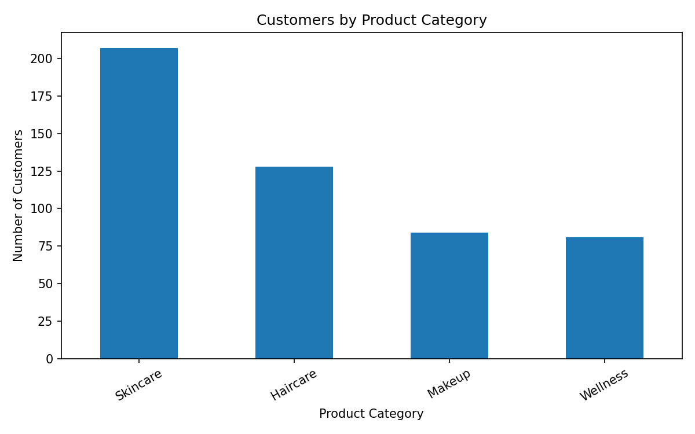
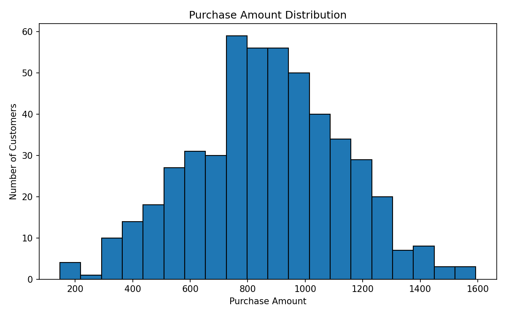
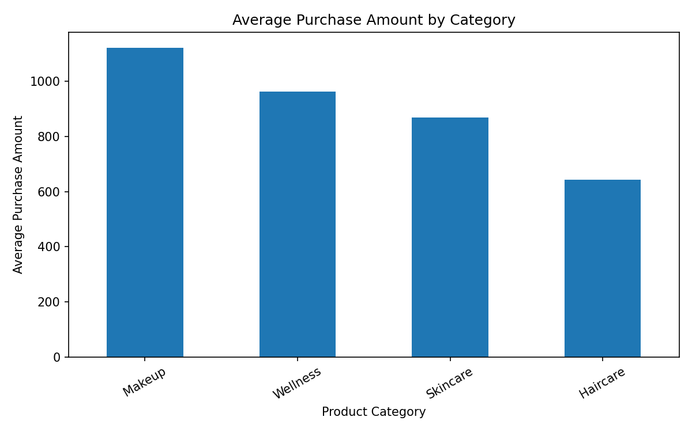
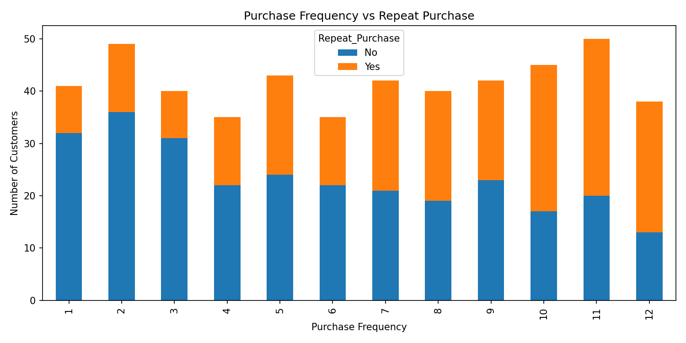

Data Analysis
Inspect data quality, summarise variables and explore customer behaviour.
Data-driven customer segmentation and product preference prediction using Python, data visualisation and machine learning.
View GitHub ProjectThis project demonstrates how customer data can be analysed to explore purchasing patterns, group customers with similar behaviour, and predict product categories.
Inspect data quality, summarise variables and explore customer behaviour.
Apply K-Means clustering to group customers using selected features.
Use a Decision Tree classifier to demonstrate product category prediction.
Generate and inspect the simulated customer dataset.
Check duplicates, missing values and data types.
Visualise category counts, spending and repeat purchasing.
Build customer segments and evaluate product category predictions.
These sections display charts exported from the Colab analysis. Upload your PNG charts to the repository paths shown below.
Number of customers in each product category.

Upload category_distribution.png to assets/charts/.
Distribution of customer purchase amounts.

Upload purchase_distribution.png to assets/charts/.
Average purchase amount by product category.

Upload average_spending.png to assets/charts/.
Purchase frequency compared with repeat-purchase counts.

Upload repeat_purchase.png to assets/charts/.
Three clusters are created using age, purchase frequency, purchase amount and browsing time.
Review the cluster averages in your exported segment summary.
View segment summary CSVA classifier predicts product category from selected customer features. Its performance should be evaluated on held-out test data.
Actual test accuracy: Add the value printed by Colab.
View confusion matrixReplace the accuracy placeholder with the exact test accuracy from your notebook. Do not estimate or invent this value.
Explore whether different customer segments could benefit from different offers.
Use category-level purchase summaries to demonstrate how businesses might investigate demand.
Study repeat-purchase patterns and design future experiments with real data.
Because the dataset is simulated, the results demonstrate an analytical workflow rather than establish real customer preferences. The classifier may learn artificial patterns in the generated data. Real-world use requires suitable customer data, validation, privacy safeguards and additional evaluation.